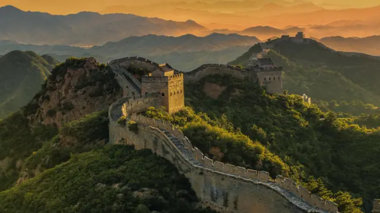

La Gran Muralla China es una fortificación construida entre los siglos V a.C.
y XVII d.C. en el norte de China, a fin de contener las invasiones de tribus nómadas
provenientes principalmente de Mongolia. Se trata de la mayor obra de ingeniería
desarrollada en la historia.
La Gran Muralla China es una de las estructuras más icónicas y extensas del mundo, construida
a lo largo de varios siglos con el objetivo principal de proteger el territorio chino de invasiones
y ataques de tribus nómadas, especialmente de los mongoles y xiongnu. Su construcción comenzó en el
siglo VII a.C. durante la dinastía Zhou, pero las secciones más reconocidas hoy fueron construidas
entre los siglos III a.C. y XVII d.C., principalmente durante las dinastías Qin, Han y Ming.
El emperador Qin Shi Huang, fundador de la dinastía Qin, fue quien unificó varias murallas
preexistentes y extendió su construcción a lo largo de más de 21,000 kilómetros. Los materiales usados
variaron según la región, desde tierra compactada y madera hasta ladrillos y piedras en áreas más
desarrolladas. La muralla no era solo una barrera física; también tenía torres de vigilancia, cuarteles
y pasadizos estratégicos para la comunicación y el despliegue rápido de tropas.
Durante la dinastía Ming (1368-1644), la muralla fue renovada y ampliada considerablemente,
alcanzando su forma y estructura actuales. A pesar de su imponente tamaño y longitud, la muralla no fue
completamente efectiva para detener todas las invasiones, como la de los mongoles en el siglo XIII.
Con el tiempo, la muralla perdió su función militar y se deterioró en varias secciones, pero ha sido
restaurada y es hoy un símbolo nacional y Patrimonio de la Humanidad por la UNESCO.
Cultura Militar y de Defensa: La Gran Muralla simboliza la antigua estrategia militar china de defensa
y protección contra invasores. Las dinastías chinas, especialmente la dinastía Ming, invertían en la
construcción y mantenimiento de la muralla para salvaguardar su civilización de tribus nómadas y otros enemigos
La Gran Muralla China fue nombrada maravilla del mundo el 7 de julio de 2007
